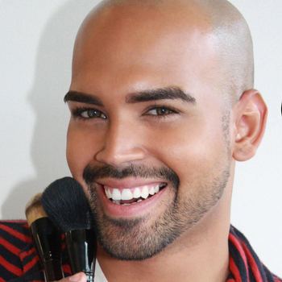

About Me

I'm a Full Stack Web Developer who utilizes experience in design and marketing to develop professional stylish and dynamic web applications that offer an aesthetically pleasing interactive user experience. My desire to create and learn lead to earn a certificate in Full Stack Web Development through the University of Georgia Tech.
This experience taught me the technical skills needed such as HTML, CSS, JavaScript, JQuery, along with my strong desire to learn and utilize my problem solving skills when debugging applications and working on team projects. I worked with my team to develop an app called “Picky” which is a mobile friendly designed application to help the user find recipes targeted towards certain dietary restrictions, food allergies, and specific ingredients. I am eager to utilize my skills in web development, marketing, and sales as part of an ever changing fast-paced team to build dynamic web experience that connects with the user.